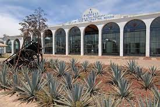
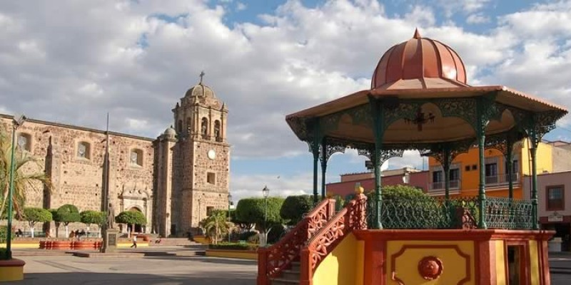

TEQUILA, JALISCO.
Lugares para visitar:
- Haciendas Tequileras
- Campos de agave
- El Pueblo Mágico de Tequila
- Las artesanías de Ópalo
- Cascada Los Azules
- El Volcán de Tequila
- Guachimontones
- Tren a Tequila

Lugares más vistados:
- Paisaje agavero y antiguas instalaciones
- Fábrica La Rojeña
- Volcán de Tequila
- Museo Nacional del Tequila
- Cascada Los Azules Tequila
- Balneario La Toma
- Plaza Principal Tequila

ES SITIO WEB SE ELABORO CON FINES EDUCATIVOS, COMO PARTE DE LA ACTIVIDAD DE LA MATERIA DE CONSTRUYE PAGINAS WEB
Profesor: Juan Carlos Mariscal Chavarin
Estudio en: CETIs no. 161
Nombre: Irma Monserrat Santana Arroyo Correo: monsesan137@gmail.com